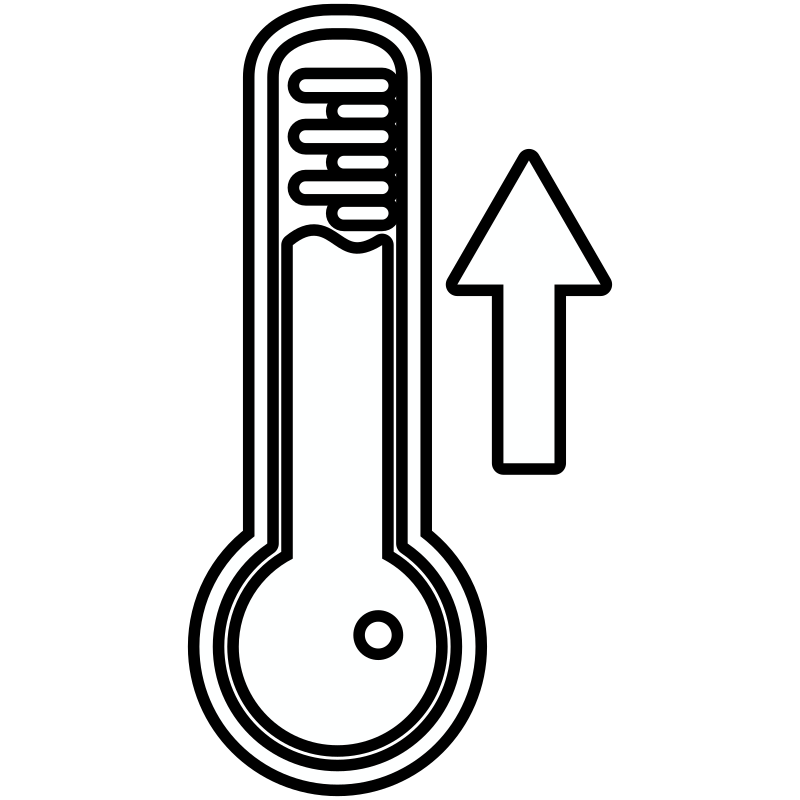

Test

Warming Ocean
Test!
Sea Level Rise

Test!
Changes in Storm Patterns
Test!
Changes in Precipitation
A change in precipitation is noted by increased heavy rains and stormwater runoff. This increased
runoff
of freshwater can pose the following problems for coral reefs:
- Freshwater can dilute the salinity of ocean water, which can result in stress of and/or killing of shallow-water corals.
- Rain washes sediment into reefs, which then settles onto corals and can block their ability to eat and breathe.
- In addition to the above, murky water from sediment can cut off sunlight, further starving coral.
- Land-based pollutants carried by rainwater results in algae overgrowth. This algae will overwhelm coral reefs and even suffocate slow-growing corals.

Altered Ocean Currents
Without steady ocean currents, coral reefs will starve. Corals feed off of plankton and organic
matter that they pull out of ocean curent, and when currents
begin to shift from their regular paths, food can completely bypass entire reefs.
In addition to eating, coral reefs rely on steady ocean currents to migrate coral larvae to other
areas of the ocean to do the following:
- Find new homes
- Settle on dying reefs to support recovery
- Spread genetic diversity across other coral populations to combat inbreeding
Ocean Acidification
When seawater absorbs excess carbon dioxide from the atmosphere, carbonic acid forms which in turn lowers the water's pH levels. This then reduces the levels of carbonate ions in the seawater, which corals use to build and maintain their skeletons. Weaker skeletons means the brittle corals cannot expand and growth rates decrease rapidly.